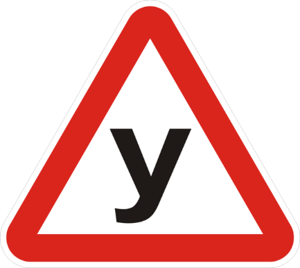

24.1. Навчати водінню транспортного засобу дозволяється лише осіб, які не мають для цього медичних протипоказань.
24.2. Особам, котрі навчаються водінню автомобіля, повинно бути не менше 16 років, а мотоцикла чи мопеда – 14 років. Такі особи зобов’язані мати при собі документ, що засвідчує їхній вік.
24.3. Особа, яка навчається водінню транспортного засобу, зобов’язана знати і виконувати вимоги цих Правил.
24.4. Початкове навчання водінню транспортного засобу повинно проводитися на закритих майданчиках, автодромах або у місцях, де відсутні інші учасники дорожнього руху.
24.5. Навчальна їзда на дорогах дозволяється тільки в присутності спеціаліста з підготовки водіїв і за достатніх початкових навичок водіння у того, хто навчається.
{Пункт 24.6 виключено на підставі Постанови КМ № 1029 від 26.09.2011}
{Пункт 24.7 виключено на підставі Постанови КМ № 1029 від 26.09.2011}
24.8. Транспортні засоби (за винятком мотоциклів, мопедів та квадроциклів), на яких проводиться навчання, повинні мати розпізнавальні знаки “Учбовий транспортний засіб” відповідно до вимог підпункту “к” пункту 30.3 цих Правил. Автомобілі, які систематично використовуються для навчання також повинні бути обладнані додатковими педалями зчеплення (у разі коли конструкція транспортного засобу передбачає педаль зчеплення), акселератора (у разі коли конструкція транспортного засобу допускає можливість обладнання такою педаллю) і гальмування, дзеркалом або дзеркалами заднього виду для спеціаліста з підготовки водіїв.

Учбовий транспортний засіб
24.9. Забороняється навчання водінню транспортних засобів у житловій зоні, на дорогах для автомобілів та на автомагістралях.